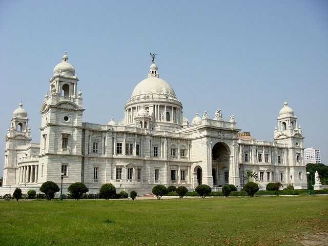

PLACES TO VISIT
VICTORIA MEMORIAL
The Victoria Memorial is a large marble building, which is considered to be the pride of Kolkata. Built between 1906 and 1921, it is dedicated to the memory of Queen Victoria. Now, it is a museum and a popular tourist spot under the Ministry of Culture.

FORT WILLIAM KOLKATA
Fort William is a fort built in Kolkata on the eastern banks of the River Hooghly, the major distributary of Ganges. The magnificent structure is spread over 70.9 acres and is embellished with hundreds of arched windows that overlook lush green gardens.
BELUR MATH
Belur Mutt is the headquarters of the Ramakrishna Math and Mission, founded by Swami Vivekananda. Situated on the west bank of Hooghly River, the temple is prominent for its architecture that embraces Hindu, Christian and Islamic styles and stands as an icon of unity of all religions.

HOWRAH BRIDGE
Located over the Hooghly river in West Bengal, Howrah Bridge or the Rabindra Setu is the main connection between Howrah and Kolkata. It is a cantilever bridge and is regarded as one of the busiest ones among them.
INDIAN MUSEUM
The Indian Museum is one of the oldest museums of the world boasting some of the most exquisite collections of ornaments, fossils, skeletons, antiques, armors, mummies and stunning Mughal paintings.